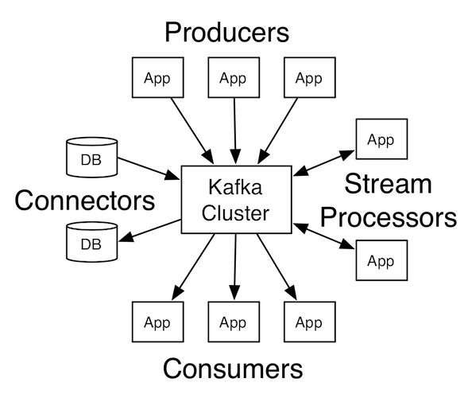

Big Data System Design
Tentamenvoorbereiding en losse eindjes
Roelant Ossewaarde en Jos van Reenen, B 2019-2020
1 Oefententamen
Link naar socrative: http://socrative.com/, room: ABE1A2CB
2 Streaming processosrs - Kafka Stream

Figure 1: Kafka APIs
2.1 Concepten van Apache Kafka
- Een event (buiten de applicatie) genereert een record (de realtime data, binnen de applicatie). Een record is typisch een Key/Value-pair.
- De key/value zijn een topic en de data. Door middel van het topic wordt het type data aangegeven.
- Een record wordt bewaard door een broker. Ieder topic heeft zijn eigen partition.
- Een Publish-subscribe-pattern:
- Een producer genereert en stuurt (publishes) een record over een topic.
- Een consumer luistert (subscribes) naar een topic.
2.2 Topics en partitions

Figure 2: Anatomy of a kafka-log
Een partition is een geordende, read-only reeks van records waar steeds nieuwe informatie aan wordt toegevoegd. Binnen elke partition worden records genummerd (de zgn. offset).
Een partition past op één machine. Maar een serie partities kan horizontaal schalen over verschillende systemen.
2.3 Partitions hebben consumers en producers

Figure 3: Anatomy of a kafka-log - consumers
2.4 Consumers zijn georganiseerd in consumer groups

Figure 4: Kafka-log - consumer groups
NB: Kafka kan records verspreiden als in een queue of als in een publish-subscribe pattern (zie vergelijking).
2.5 Voorbeeld (abstract)
2.6 Voorbeeld: fraude-detectie van reviews, met batching

Figure 6: Kafka-log - case-study batching
(bron)
2.7 Voorbeeld: fraude-detectie van reviews, met streams

Figure 7: Kafka-log - case-study streaming
2.8 Voorbeeld-applicatie van Kafka (mbv Kafka Streams)

Figure 8: Kafka-log - case-study streaming (2)
2.9 De analyse van data gebeurt soms op basis van eeen window
De data is dan opgespaard over een bepaalde tijd (x minuten) of een bepaalde hoeveelheid data (x events).
Er zijn verschillende typen windows:
- Sliding window: het window "beweegt" steeds maar een deel van de window-breedte. Bijvoorbeeld voor het berekenen van Moving Averages.
- Tumbling window: Het window "beweegt" zodat er geen overlap is tussen windows.
- Session window:: Het window staat steeds om data heen die bij elkaar horen.
2.10 De latest and greatest
Er zijn onlangs implementaties verschenen waarmee je SQL-achtige statements kunt gebruiken om streaming data mee te bevragen. Zie bijvoorbeeld deze video voor een technische uitleg daarvan.
Als stream processor wordt tegenwoordig vaak Apache Flink gebruikt. Dat is dus het framework dat de consumer en producer API's (van bijvoorbeeld Kafka) aan elkaar knoopt. Flink is een gedistribueerd framework.
3 Parallelisme
Een probleem met het traditionele model van computers: Von Neumann bottleneck.
Figure 9: Von Neumann architectuur
Processor en memory zitten aan weerskanten van een langzame geheugenbus. Instructies en data gaan via bus tussen processor en geheugen.
3.1 CPU en memory innoveren niet op hetzelfde tempo
Figure 10: CPU verbetert veel sneller dan geheugen
CPU's kunnen nauwelijks sneller worden zonder enorme toename in energieverbruik (en zie ook hier). De aandacht is verschoven naar multicore machines.
3.2 Parallele architecturen kunnen misschien helpen
Verschillende vormen van parallel dataverwerken:
- Data parallelism: Data wordt verspreid over verschillende computers. Elke computer heeft eigen CPU en geheugen.
- Voorbeelden: Map/Reduce architectuur; bitcoin mining op GPU's; geavanceerde gaming setups.
- Task parallelism: Data in een centraal geheugen. Verschillende processoren benaderen
- Voorbeeld: multicore machines
- Pipeline parallelism: Hybride vorm: verschillende delen werken elk aan een onderdeel van het probleem.
- Voorbeeld: verdeling van werk bij opbouwen geavanceerde graphics; lopende bandwerk in een fabriek.
3.3 Parallele architecturen kunnen misschien helpen
Verschillende vormen van parallel dataverwerken:
Data parallelism: Data wordt verspreid over verschillende computers. Elke computer heeft eigen CPU en geheugen.
- Voorbeelden: Map/Reduce architectuur; bitcoin mining op GPU's; geavanceerde gaming setups.
Task parallelism: Data in een centraal geheugen. Verschillende processoren benaderen
- Voorbeeld: multicore machines
Pipeline parallelism: Hybride vorm: verschillende delen werken elk aan een onderdeel van het probleem.
- Voorbeeld: verdeling van werk bij opbouwen geavanceerde graphics; lopende bandwerk in een fabriek.
3.3.1 Data parallelism.
Figure 11: In data parallelism werkt iedere CPU met een eigen stuk data.
Voorbeeld-probleem: vertaal alle karakters naar upper-case.
Probleem-eigenschappen:
- De data kan verdeeld worden, er is geen onderlinge afhankelijkheid van de data.
- Iedere taak kan zelfstandig uitgevoerd worden.
3.3.2 Task parallelism.
Figure 12: In task parallelism werken meerdere CPUs aan dexelfde data.
Voorbeeld-probleem: bereken het gemiddelde en minimum en maximum van een set getallen.
Probleem-eigenschappen:
- De data kan alleen als set in het geheel benaderd worden. Bijv: gemiddelde is een eigenschap van de hele dataset.
- Elke taak afzonderlijk (gemiddelde, minimum, maximum) kan zelfstandig uitgevoerd worden.
3.3.3 Pipeline parallelism.
Figure 13: In pipeline parallelism wordt een probleem stapsgewijs verdeeld.
Voorbeeld-probleem: toepassen van serie bewerkingen op een set plaatjes.
Probleem-eigenschappen:
- De data vereist verschillende bewerkingen.
- Iedere bewerking kan zelfstandig uitgevoerd worden.
3.4 Alternatieven voor computerarchitectuur
Figure 14: Varianten van het Von Neumann model
4 Programma
Aanstaande vrijdag:
- We bespeken assignments 1 en 2.
- We doen voor hoe je importeert in Kafka, Flink en Spark.